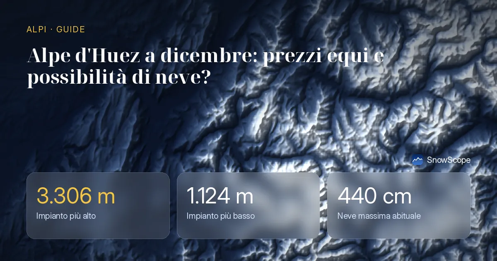

Alpe d'Huez a dicembre: prezzi equi e possibilità di neve?
Stai organizzando un viaggio per un gruppo di studenti per dicembre 2026 e stai guardando Alpe d'Huez? Abbiamo controllato i prezzi ufficiali dei biglietti e la nostra storia della neve di 46 inverni passati per vedere se questa famosa stazione francese offre un buon valore.
Le previsioni neve in tempo reale per Alpe d'Huez nell'app SnowScopeAltezza neve, allerte powder e mappa 3D, gratis.
Il prezzo di partenza è equo per una grande stazione?
Organizzare un viaggio per un gruppo di studenti significa guardare ogni euro speso. Ad Alpe d'Huez, il prezzo di partenza dello skipass adulto 1 giorno per l'inverno 2026-27 è di 58,00 EUR. Se rimani più a lungo, lo skipass adulto 6 giorni costa 336,50 EUR.
L'area sciistica mappata ha 163 km di piste e 82 impianti di risalita. Ottieni molto terreno per i tuoi soldi, ma diamo un'occhiata alle probabilità di neve prima di prenotare.

Altezza della neve alla base, a metà e in cima a dicembre
La nostra storia della neve di 46 inverni passati mostra una grande differenza tra la base degli impianti a 1.124 m e l'alta cima a 3.306 m. Alla base, l'altezza abituale a dicembre è di 14 cm. Il 15 dicembre, l'altezza abituale è di 13 cm. In un dicembre scarso, scende a 0 cm. La quota di inverni con 30 cm o più alla base è solo del 4 percento dall'1 al 7 dicembre, salendo al 28 percento dal 22 al 28 dicembre.
Le cose migliorano velocemente salendo. A metà montagna a 2.215 m, l'altezza abituale a dicembre è di 60 cm, e l'altezza abituale il 15 dicembre è di 56 cm. In un dicembre scarso, ottieni 25 cm, mentre un dicembre abbondante porta 107 cm. La quota di inverni con 30 cm o più a metà montagna è del 70 percento nella prima settimana, e raggiunge il 96 percento dal 22 al 28 dicembre.
In cima agli impianti a 3.306 m, l'altezza abituale a dicembre è di 159 cm, con 151 cm il 15 dicembre. In un dicembre scarso, trovi ancora 70 cm di neve, e un dicembre abbondante raggiunge 278 cm. La quota di inverni con 30 cm o più qui è del 98 percento nella prima settimana e del 100 percento per il resto del mese.
Condizioni attuali della neve e prospettive per le due settimane
In questo momento, l'altezza della neve alla base degli impianti a 1.124 m è di 0 cm, con 0 cm di neve fresca previsti nei prossimi 7 giorni. A metà montagna a 2.215 m ci sono 0 cm in questo momento, ma si prevedono 59 cm di neve fresca nei prossimi 7 giorni. In cima agli impianti a 3.306 m, l'altezza attuale è di 58 cm, con 90 cm previsti nei prossimi 7 giorni. Per la metà montagna e oltre, le prospettive di neve fresca per due settimane danno una media di 92 cm con un intervallo da 73 cm a 110 cm.
Alpe d'Huez o Les 2 Alpes
Come si confronta Alpe d'Huez con Les 2 Alpes dall'altra parte della valle? Les 2 Alpes ha 108 km di piste e 46 impianti, con un impianto più basso a 1.284 m e uno più alto a 3.511 m. Il suo pass adulto 6 giorni Grand Domaine costa 266,50 EUR, mentre il biglietto Freedom 1 giorno a data flessibile costa 68,00 EUR.
Nella nostra storia della neve, Les 2 Alpes ha un'altezza abituale a dicembre di 16 cm alla base, 75 cm a metà montagna e 176 cm in cima. Il 15 dicembre, Les 2 Alpes di solito ha 14 cm alla base, 73 cm a metà montagna e 160 cm in cima. Entrambe le stazioni hanno neve affidabile in alto, e per lo skipass di 6 giorni Les 2 Alpes è la più economica: 266,50 EUR contro 336,50 EUR.
Prima neve, ultimo inverno e tendenze a lungo termine
Alla base di Alpe d'Huez, il primo giorno di neve duratura abituale è il 12 novembre. Il picco stagionale abituale è di 52 cm, con 159 giorni di neve abituali per inverno. A metà montagna, il primo giorno di neve duratura abituale è il 18 ottobre, con un picco stagionale di 184 cm e 218 giorni di neve. In cima, la neve di solito arriva entro il 30 settembre, raggiungendo un picco stagionale di 440 cm su 232 giorni di neve.
Guardando la tendenza a lungo termine, l'altezza media di dicembre a metà montagna era di 50 cm nei primi 15 inverni dal 1980-81 al 1994-95, ed è salita a 65 cm negli ultimi 15 inverni dal 2011-12 al 2025-26. In cima, la media è passata da 133 cm a 165 cm tra gli stessi periodi. L'inverno scorso a dicembre 2025, l'altezza media era di 10 cm alla base, 49 cm a metà montagna e 132 cm in cima. Il dicembre più scarso mai registrato alla base è stato di 0 cm nel 1989-90, mentre il più abbondante è stato di 42 cm nel 1981-82.
Consigli per sciatori
- Prenota il tuo pass 6 giorni sul sito ufficiale per 336,50 EUR.
- Pianifica le tue sciate a metà montagna e nelle zone in cima sopra i 2.215 m a dicembre, perché la base è spesso sottile con un'altezza abituale di soli 14 cm.
- Viaggia più tardi a dicembre se possibile, poiché la quota di inverni con 30 cm o più di neve alla base aumenta dal 4 percento nella prima settimana al 28 percento nell'ultima settimana.
- Controlla sempre il bollettino locale delle valanghe prima di andare fuori pista, anche quando le altezze in cima raggiungono i 159 cm.
Altre mappe (siti esterni)
Riferimenti e crediti
- Alpe d'Huez, official ski pass shop, winter 2026-27 skipass.alpedhuez.com/hiver/
- Les 2 Alpes, official ski pass shop, prices 2026-27 www.skipass-2alpes.com/en/pricing
- Les 2 Alpes, official ski pass shop, opening weekend offer www.skipass-2alpes.com/fr/forfaits/ski
- SnowScope, December snow at three heights and today's snow map snowscope.app/
Su questi numeri
Numeri della neve: storico neve SnowScope, 46 inverni passati (1980-81 - 2025-26) a tre quote di ogni località (un modello del passato corretto per la quota: una stima per un'area, non misure della località); dati di dicembre calcolati dalle altezze giornaliere di quegli inverni. Neve attuale e tendenza a due settimane: previsioni SnowScope (tendenza da ECMWF e GFS, un intervallo, non una promessa). Impianti e piste: mappatura OpenSkiMap. Prezzi: le pagine ufficiali qui sotto, lette il 2026-11-13; i prezzi possono cambiare, verificare prima di prenotare.
Bollettini valanghe ufficiali: Météo-France – Bulletin d'estimation du risque d'avalanche
Cita questo articolo
Per ricerca, didattica o stampa: numeri e grafici sono liberamente riutilizzabili con licenza CC BY 4.0 citando così.
SnowScope (2026), Alpe d'Huez a dicembre: prezzi equi e possibilità di neve?, https://snowscope.app/blog/it/2026/11/alpe-dhuez-december-ski-starting-price-snow-2026.html, consultato il 2026-11-14
SnowScope (Atlas Labs). (2026, November 14). Alpe d'Huez a dicembre: prezzi equi e possibilità di neve?. SnowScope snow reports. https://snowscope.app/blog/it/2026/11/alpe-dhuez-december-ski-starting-price-snow-2026.html
BibTeX
@misc{snowscope2026alpedhuezdecemberskistar,
author = {{SnowScope (Atlas Labs)}},
title = {Alpe d'Huez a dicembre: prezzi equi e possibilità di neve?},
year = {2026},
month = nov,
howpublished = {\url{https://snowscope.app/blog/it/2026/11/alpe-dhuez-december-ski-starting-price-snow-2026.html}},
note = {Published 2026-11-14 18:11 UTC; accessed 2026-11-14}
}· CC BY 4.0 · Metodi, dati e strumenti →
Alpe d'Huez: neve e temperatura per quota, quest'inverno vs lo scorso (strumenti) →
Segui Alpe d'Huez
Gratis: un messaggio quando arriva la neve e il meteo ogni mattina.